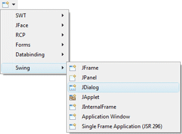
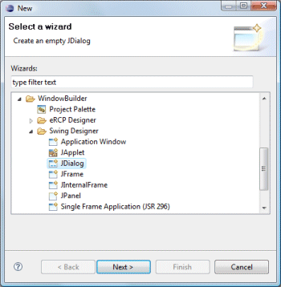
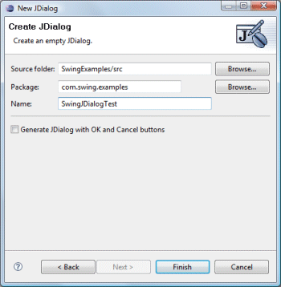

|
Subclasses of the Swing JDialog class can be
created using the Swing JDialog wizard. The wizard can be
selected from the drop down wizard menu or from the
Eclipse New wizard.
To use the wizard, select the project source folder and package to contain the class. Then enter the class name and hit the Finish button. |
|
  |
|
javax.swing.JDialog; public class SwingJDialogTest extends JDialog { public static void main(String[] args) { try { SwingJDialogTest dialog = new SwingJDialogTest(); dialog.setDefaultCloseOperation(JDialog.DISPOSE_ON_CLOSE); dialog.setVisible(true); } catch (Exception e) { e.printStackTrace(); } } public SwingJDialogTest() { setBounds(100, 100, 450, 300); } } If the Generate JDialog with OK and Cancel buttons option is checked, the following code is generated which adds an OK and Cancel button private final JPanel m_contentPanel; setBounds(100, 100, 450, 300); getContentPane().setLayout(new BorderLayout()); m_contentPanel = new JPanel(); m_contentPanel.setLayout(new FlowLayout()); m_contentPanel.setBorder(new EmptyBorder(5, 5, 5, 5)); getContentPane().add(m_contentPanel, BorderLayout.CENTER); JPanel buttonPane = new JPanel(); buttonPane.setLayout(new FlowLayout(FlowLayout.RIGHT)); JButton okButton = new JButton("OK"); getRootPane().setDefaultButton(okButton); okButton.setActionCommand("OK"); buttonPane.add(okButton); JButton cancelButton = new JButton("Cancel"); cancelButton.setActionCommand("Cancel"); buttonPane.add(cancelButton); getContentPane().add(buttonPane, BorderLayout.SOUTH); When editing Swing JDialogs, all of the standard Swing layouts, containers, widgets and menus are available. Custom or third party controls may be added via the Choose Component command. You may also preview your dialog using different look and feels using the drop down look and feel list in the toolbar. |